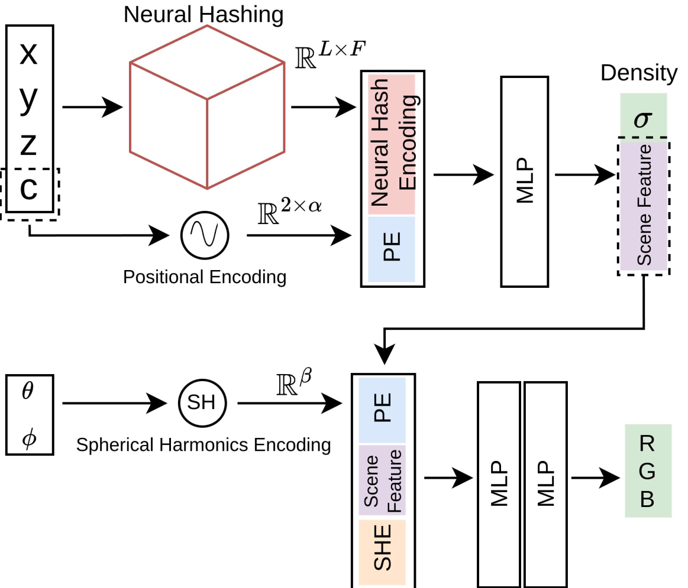
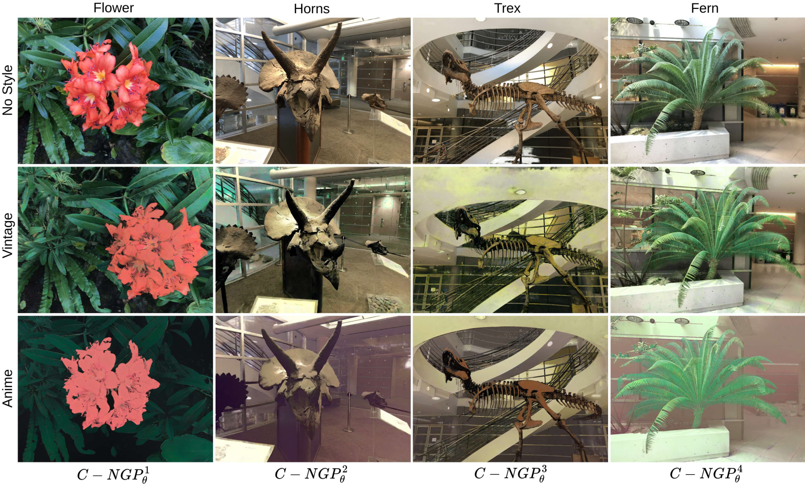

|
|
|
Neural radiance fields (NeRF) have revolutionized photorealistic rendering of novel views for 3D scenes. Despite their growing popularity and efficiency as 3D resources, NeRFs face scalability challenges due to the need for separate models per scene and the cumulative increase in training time for multiple scenes. The potential for incrementally encoding multiple 3D scenes into a single NeRF model remains largely unexplored. To address this, we introduce Continual-Neural Graphics Primitives (C-NGP), a novel continual learning framework that integrates multiple scenes incrementally into a single neural radiance field. Using a generative replay approach, C-NGP adapts to new scenes without requiring access to old data. We demonstrate that C-NGP can accommodate multiple scenes without increasing the parameter count, producing high-quality novel-view renderings on synthetic and real datasets. Notably, C-NGP models all 8 scenes from the Real-LLFF dataset together, with only a 2.2% drop in PSNR compared to vanilla NeRF, which models each scene independently. Further, C-NGP allows multiple style edits in the same network. The implementation details and dynamic visualizations are in the supplementary material.




NeRF Synthetic 360° |
||
 Chair |
 Lego |
|
 Hotdog |
 Ficus |
|
Real Forward Facing (LLFF) |
||
 Flower |
 Horns |
|
 Trex |
 Leaves |
|
Tanks and Temple Dataset |
|
 Barn |
 Caterpillar |
 Family |
 Truck |
Note: The spiral motion is causing a ghosting or blurry effect in the case of the Tanks and Temple dataset. |
|